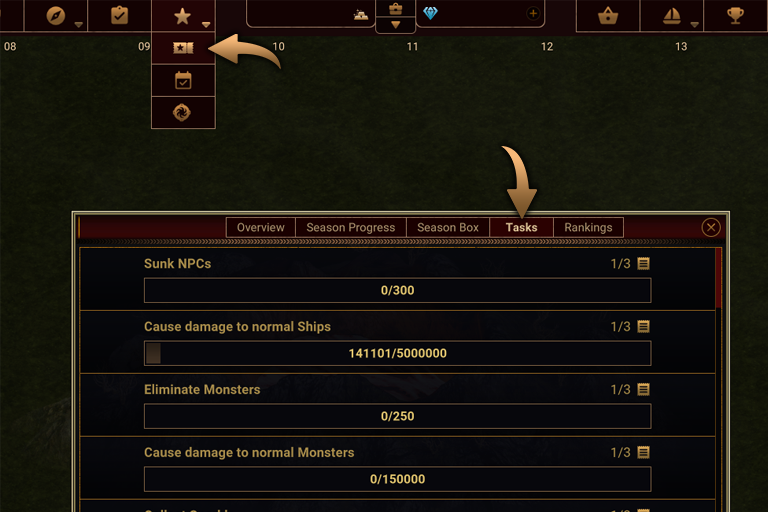
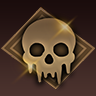
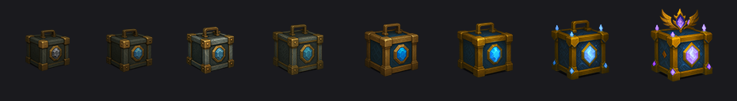

Season System – Season 4 Format
Season Start Date: 19.09.2025
Season Duration: 3 Months
The new Season format introduces a redesigned progression system with 30 Tasks that increase in difficulty as you progress. Tasks are grouped in three difficulty tiers:
- Easy
- Medium
- Hard

Season Coins & Season Keys
Every Season task rewards a certain amount of the new currency: Season Coins, which are used to unlock Season rewards.
You can find your Season Coins in the Material Bag.

Every 5 windows of Season Progress (5, 10, 15, 20, 25, 30, 35, 40), you obtain a new item: the Season Key, used to open the Season Crate.
With the Free Season Pass and the Season Pass in the payment area, by completing all tasks, players can reach a total of 17 Season Keys.

Season Rankings & Adjustments
The old season format remains, but with adjustments to better support the new Task-based system:
- The Season ranking has been decreased to give priority to the new Task format.
- The Season points limit from NPCs is capped at 12,000.
Rules of the New Season Format
- Season Coins can be obtained only by completing Season Tasks and some events.
- To obtain rewards of Season Pass & Legend Pass, you must spend Season Coins on the progress windows you want to unlock.
- Season Keys are used to open the Season Crate. They can be obtained from Season Pass, Legend Pass, and additionally in the Legend Store for extra crates.
- To access a Season Crate, you must first unlock 5 Season progress windows, and likewise for further crates.
- Season Crates do not need to be opened in a fixed order: once unlocked, you can open them in any order.
- All tasks are available when the Season starts. As a progression system, when a quest is finished, the next difficulty appears following the same quest line with higher difficulty.
- The last difficulty level of each Task is "Hard". Once completed, that Task’s progression is considered finished.
Season Pass & Legend Pass
Throughout the Season, you can earn valuable rewards via the Season Pass. The Season Pass is available to everyone and includes rewards such as:
- Surprise ship design
- Repair effect
- Speed effect
Additionally, you can purchase the Legend Pass from the Legend Store to access even more valuable rewards and to receive all rewards at each level.
Season Rank System
The Season Rank System remains active. Players can accumulate up to 12,000 Season Points from NPCs. Once this limit is reached, no further PvE Season Points can be earned, and players must rely on player vs. player combat to reach higher ranks.
Rank Tiers
- Unranked
- Bronze
- Silver
- Gold
- Platinum
- Champion
You can climb these ranks by earning Season Points, and lose ranks by losing points.
How to Increase Your Rank
- Complete Season Pass tasks to earn Season Points.
- Destroy system ships on maps from levels 5–14 (PvE) to earn Season Points, up to the 12,000-point cap.
-
Earn points by destroying enemy ships (PvP) with rules:
- You can only gain points from the same player up to 2 times per day.
- You cannot earn points from players who have 0 Season Points.
- If a player with 0 points destroys you, you still lose points.
This is a fully competitive system. Players engaging in pushing or other unfair advantages risk severe penalties, including disqualification from the Season and loss of all Season rewards.
Season End Rank Rewards
At the end of the Season, you receive rewards based on your final rank:
| Rank | Rewards |
|---|---|
| Unranked | No rewards |
| Bronze | 100,000 Season Cannonballs |
| Silver | 250,000 Season Cannonballs |
| Gold | 500,000 Season Cannonballs + 1 Special Effect |
| Platinum | 750,000 Season Cannonballs + 1 Special Design + 1 Special Effect |
| Champion | 1,000,000 Season Cannonballs + 2 Special Designs + 2 Special Effects |
At the end of the Season, these items will be changed or removed from your ship:
- 1 Season Key = 20 Keys.
- 1 Season Coin = 150 Season Cannonballs.
- Mystery Boxes are removed from the inventory.